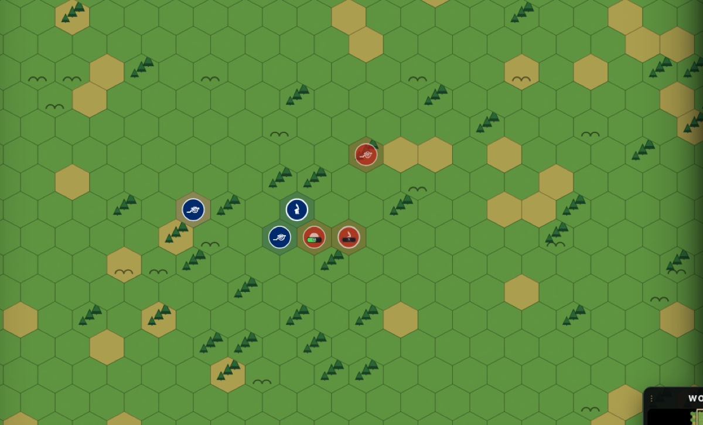

CIVVIS is an open source re-implementation of the 4X turn-based strategy game Sid Meier’s Civilization VI — built with a simulator user interface wrapping the headless backend game logic. Everything below is a preset starting configuration of settings for the simulator, but you can further customize the settings how you like or clone the code to really customize your own experience.
Everything here is a best-effort work in progress; the historical battle maps and the AI logic in particular still need a good bit of work. Feel free to request new features or report any issues you run into.
Design & Watch AI simulations
Play Single player

Watch CIVVIS Tactics
AI simulationTwo AI commanders fight a single battle while you watch.
Watch CIVVIS Tactics · AI simulation
Choose the battle
Two AI commanders fight it out while you watch. A named battle opens on its own ground with its historical forces, era and clock; Custom opens a 20×20 field with two even armies, and every other setting is yours in the simulator’s Game setup.
Watch CIVVIS · AI simulation